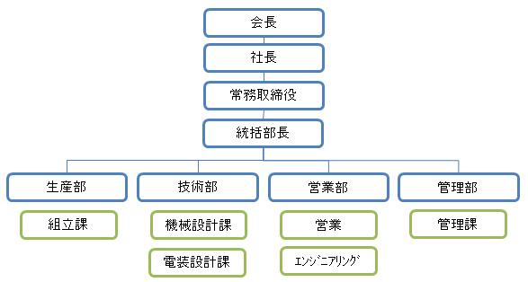

四国化工機グループの一翼を担う食品充填機・包装機メーカー植田酪農機工業
植田酪農機工業は、1910年創業以来、食品機械メーカーとして数多くの皆様に「高品質・高性能」の製品をお届けしてまいりました。当社では、食品充填機メーカーとして躍進する四国化工機グループの一員として、常に品質第一をモットーとし、永年培ったノウハウをもとに、小型食品充填機をはじめ、包装機メーカーとして、ユーザーの皆様に満足いただける製品づくりを目指してまいります。
| 会社名 | 植田酪農機工業株式会社 |
|---|---|
| 本社・工場所在地 | 〒132-0025 東京都江戸川区松江2丁目14番20号 |
| TEL / FAX | 03-3652-4161 / 03-3656-1605 |
| 設立 | 1950年2月（創業1910年5月） |
| 資本金 | 31,500,000円 （授権資本72,000,000円） |
| 従業員 | 43名（2016年4月1日現在） |
| 代表者 | 代表取締役社長 植田 滋 |
| 営業品目 | 包装機 紙カップ成型ライン用機械 アキューム用コンベア 容器充填シール機 その他の設備 |
| 加盟団体 |
一般社団法人日本食品機械工業会 一般社団法人日本包装機械工業会 一般社団法人日本乳容器・機器協会 一般社団法人江戸川工場協会 東京商工会議所江戸川支部 |
施設概要
| 本社敷地 |
|
||||||||||||||
|---|---|---|---|---|---|---|---|---|---|---|---|---|---|---|---|
| 本社建物 |
|
沿革
| 1910年（明治43年） | 5月 | 千葉県安房郡田原村にて植田鉄工場創業 |
| 1939年（昭和14年） | 9月 | 東京都江戸川区の現住所に移転 |
| 1950年（昭和25年） | 2月 | 資本金30万円で会社組織 植田酪農機工業（株）設立 |
| 1957年（昭和32年） | 資本金400万円に増資 | |
| 1961年（昭和36年） | 5月 | 資本金800万円に増資 |
| 1966年（昭和41年） | 8月 | 輸出貢献企業に認定（通産省） |
| 1969年（昭和44年） | 5月 | 資本金1,200万円に増資 |
| 1970年（昭和45年） | 5月 | 資本金1,800万円に増資 |
| 1977年（昭和52年） | 5月 | 資本金2,400万円に増資 |
| 1982年（昭和57年） | 3月 | 資本金3,150万円に増資 四国化工機（株）と業務提携及び資本提携 |
| 1982年（昭和57年） | 10月 | 敷地内に事務所を新築し、厚生棟を改築 |
| 1984年（昭和59年） | 3月 | カートンケーサーUC-70 １号機 完成 |
| 1984年（昭和59年） | 9月 | サニタリーポンプSPH-160 １号機 完成 |
| 1987年（昭和62年） | 6月 | 輸液バッグ用製袋シール機SB-30 完成 |
| 1991年（平成3年） | 6月 | アセプティック充填機UP-FUJIの後包装ライン1号機 完成 |
| 1995年（平成7年） | 上海四国食品包装机械有限公司に出資 | |
| 1997年（平成9年） | 4月 | ストローアプリケーター（位置決め付き）U-SA-80M 完成 |
| 1998年（平成10年） | 2月 | アセプティック充填機UP-FUJIの後包装ライン1号機輸出 |
| 1999年（平成11年） | 8月 | カップ用充填シール機UFS-10 １号機 完成 |
| 2000年（平成12年） | 7月 | 「創立５０周年（創業９０周年）記念式典」開催 ※1950年 植田酪農機工業（株）設立、1910年 植田鉄工場創業 |
| 2002年（平成14年） | 1月 | カップ（丸型・角型）用充填シール機UFS-40B 完成 |
| 2006年（平成18年） | 11月 | 口栓アプリケーターU-EA-80L １号機 納入 |
| 2008年（平成20年） | 12月 | ストローアプリケーターU-SA-100M 完成 |
| 2009年（平成21年） | 3月 | サーボケーサーSUC-90S 完成 |
| 2010年（平成22年） | 4月 | 「創業１００周年記念式典」開催 ※1910年 植田鉄工場創業 |
| 2010年（平成22年） | 12月 | カップケーサーRUC-140 １号機 納入 |
| 2012年（平成24年） | 11月 | パラレルロボットケーサーPUC-120 １号機 納入 |
| 2013年（平成25年） | 12月 | パラレルロボットケーサーPUC-30 １号機 納入 |
| 2014年（平成26年） | 4月 | カートンケーサーSUC-160NS １号機 納入 |
組織図
